A03
BottomSheet
packages/ui/atoms/BottomSheet
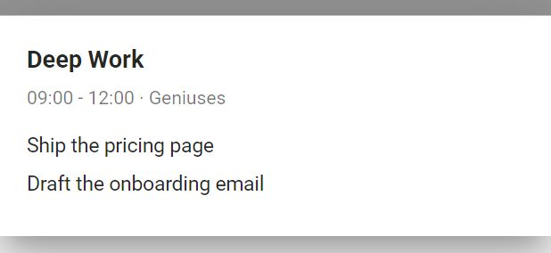
The primitives: Vuetify 1.5 controls restyled by the theme (radius 16 buttons and cards, Plus Jakarta Sans) and the app's own small parts. 54 in use, 17 legacy. Rendered from Storybook on the app background (#f4f4f4). Generated by tools/build-canvases.js; do not edit by hand.
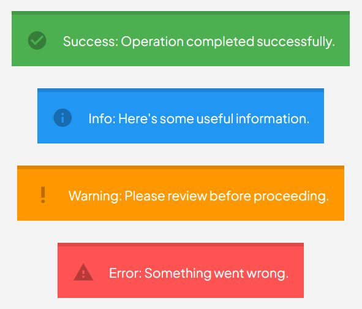
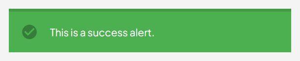
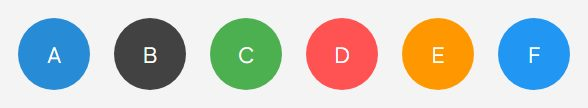


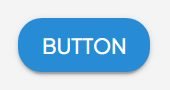
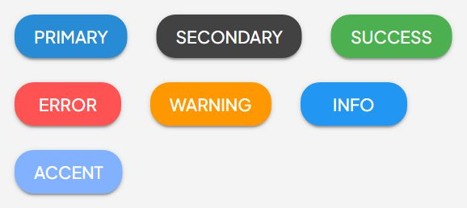
AtomCalendar - Atomic wrapper for Vuetify v-calendar A component for displaying a calendar with various views (month, week, day) and event support. Passes all attributes, events, and scoped slots to the underlying v-calendar. @example <atom-calendar v-model="selectedDate" type="month" color="primary" @click:date="handleDateClick" > <template v-slot:day="{ date }"> {{ date }} </template> </atom-calendar>
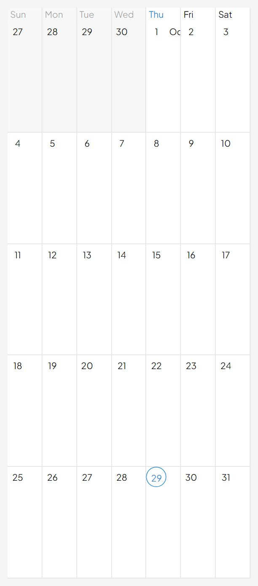
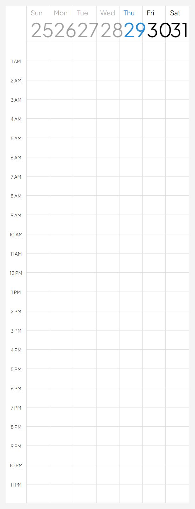
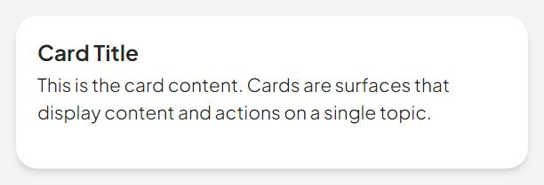

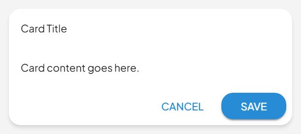
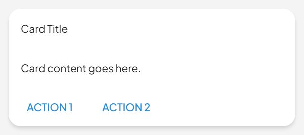
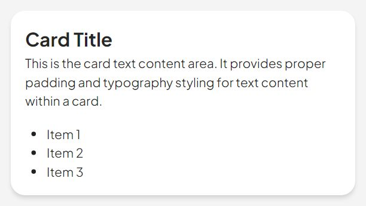
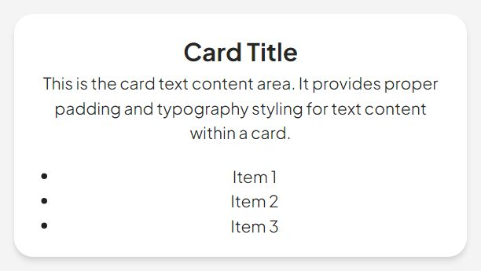
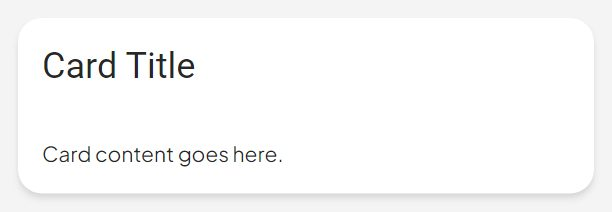
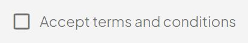
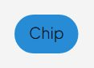
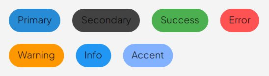
AtomChipGroup - Vuetify chip group wrapper atom This atom wraps v-chip-group providing a consistent atomic design interface while maintaining full Vuetify functionality.

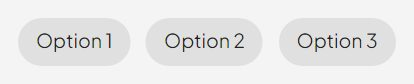

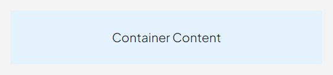
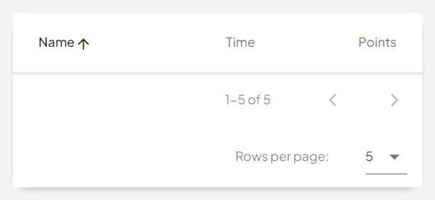
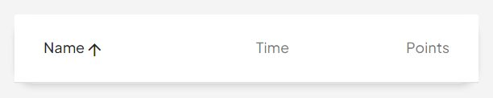
AtomDatePicker - Wrapper for Vuetify's v-date-picker Provides a visual calendar interface for date selection @example <AtomDatePicker v-model="selectedDate" :min="minDate" :max="maxDate" no-title scrollable />
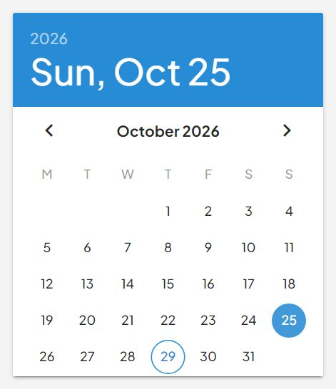
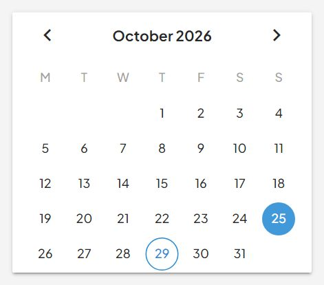

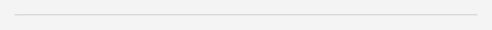
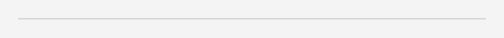
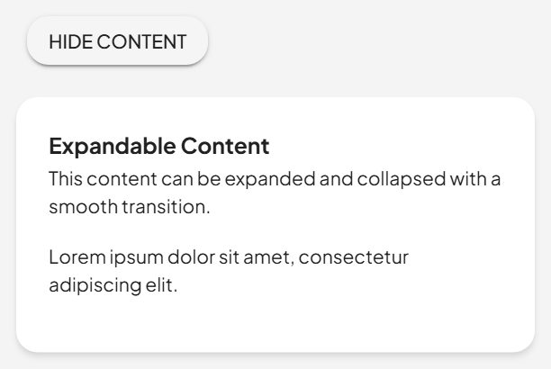
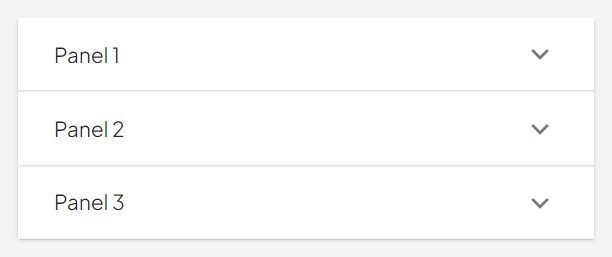

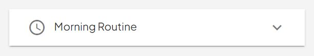
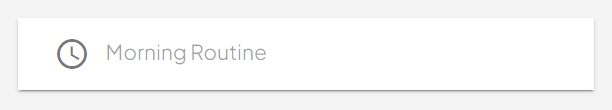
AtomFabTransition - Vuetify fab transition wrapper atom This atom wraps v-fab-transition providing a consistent atomic design interface while maintaining full Vuetify functionality.
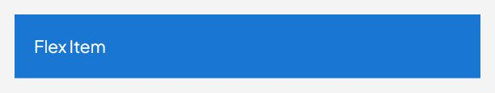
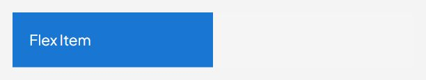
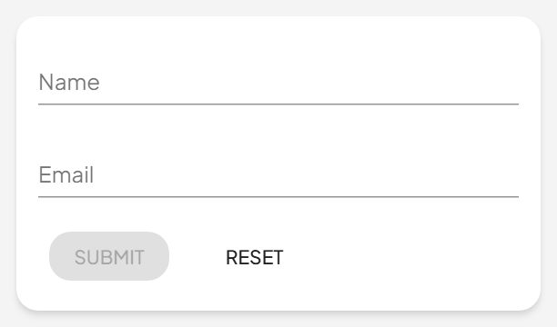
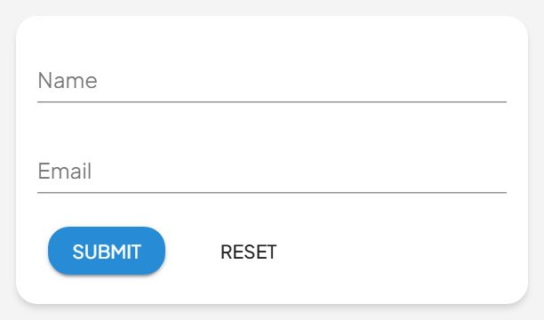
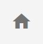
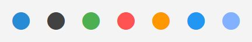
AtomImg - Atomic wrapper for Vuetify v-img A component for displaying images with lazy loading, gradients, and aspect ratio control built in. Passes all attributes and events to the underlying v-img. @example <atom-img src="path/to/image.jpg" aspect-ratio="1.7" /> @example with gradient <atom-img src="path/to/image.jpg" gradient="to top, rgba(0,0,0,.44), rgba(0,0,0,.44)" > <div>Overlay Content</div> </atom-img>
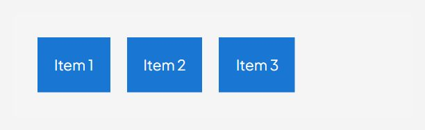
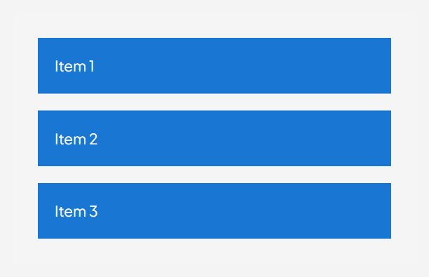
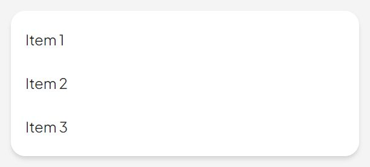
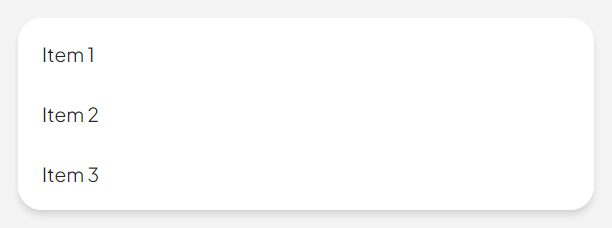
AtomListGroup - Atomic wrapper for Vuetify v-list-group A component for creating expandable groups within a list. Supports activator slot and nested content. Passes all attributes, events, and slots to the underlying v-list-group. @example <atom-list-group v-model="active"> <template v-slot:activator> <atom-list-tile> <atom-list-tile-title>Group Title</atom-list-tile-title> </atom-list-tile> </template> <atom-list…
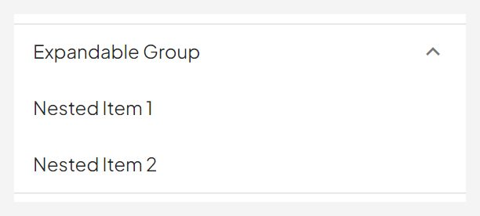
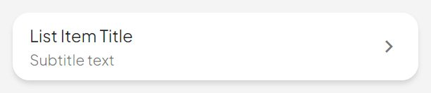
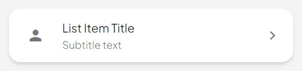
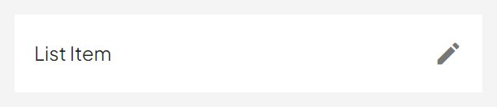
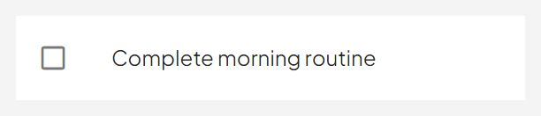
AtomListTileActionText - Vuetify list tile action text wrapper atom This atom wraps v-list-tile-action-text providing a consistent atomic design interface while maintaining full Vuetify functionality.
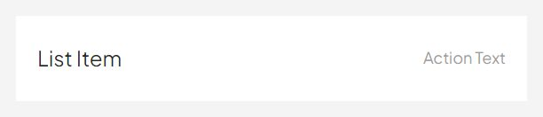
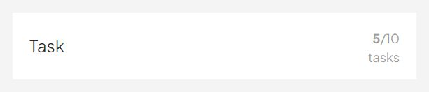
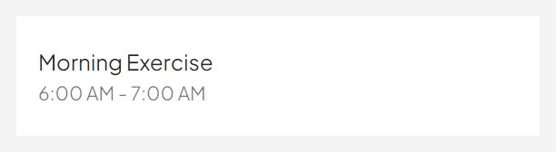
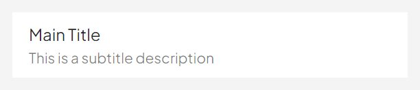
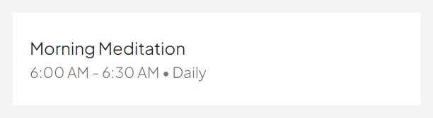
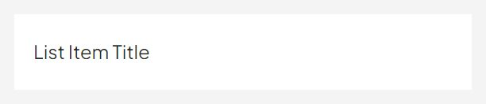


AtomSheet - Atomic wrapper for Vuetify v-sheet A simple component that provides a surface for content. It's used as a container for other components. Passes all attributes and events to the underlying v-sheet. @example <atom-sheet elevation="2"> Content here </atom-sheet> @example colored <atom-sheet color="grey lighten-3" class="pa-3"> Colored sheet </atom-sheet>
AtomSparkline - Atomic wrapper for Vuetify v-sparkline A component for displaying sparkline charts (miniature line graphs). Passes all attributes and events to the underlying v-sparkline. @example <atom-sparkline :value="[0, 2, 5, 9, 5, 10, 3, 5, 0, 0, 1, 8, 2, 9, 0]" smooth color="primary" line-width="2" auto-draw />
AtomStepper - Vuetify stepper wrapper atom This atom wraps v-stepper providing a consistent atomic design interface while maintaining full Vuetify functionality.
AtomStepperContent - Vuetify stepper content wrapper atom This atom wraps v-stepper-content providing a consistent atomic design interface while maintaining full Vuetify functionality.
AtomStepperHeader - Vuetify stepper header wrapper atom This atom wraps v-stepper-header providing a consistent atomic design interface while maintaining full Vuetify functionality.

AtomStepperItems - Vuetify stepper items wrapper atom This atom wraps v-stepper-items providing a consistent atomic design interface while maintaining full Vuetify functionality.
AtomStepperStep - Vuetify stepper step wrapper atom This atom wraps v-stepper-step providing a consistent atomic design interface while maintaining full Vuetify functionality.

AtomTimePicker - Vuetify time picker wrapper atom This atom wraps v-time-picker providing a consistent atomic design interface while maintaining full Vuetify functionality.
AtomTimeline - Atomic wrapper for Vuetify v-timeline A component for displaying a timeline with items. Passes all attributes and events to the underlying v-timeline. @example <atom-timeline dense> <atom-timeline-item>Event 1</atom-timeline-item> <atom-timeline-item>Event 2</atom-timeline-item> </atom-timeline>
AtomTimelineItem - Atomic wrapper for Vuetify v-timeline-item A component for displaying an item within a timeline. Supports icon slot and various customization options. Passes all attributes, events, and scoped slots to the underlying v-timeline-item. @example <atom-timeline-item color="primary" fill-dot> <template #icon> <atom-icon>check</atom-icon> </template> Event description </atom-timeline-item>
AtomToolbarTitle - Atomic wrapper for Vuetify v-toolbar-title A component for displaying the title text within a toolbar. Passes all attributes and events to the underlying v-toolbar-title. @example <atom-toolbar-title>My Page Title</atom-toolbar-title>